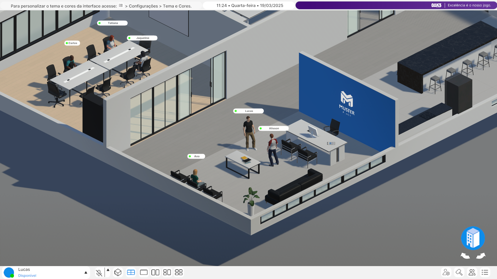
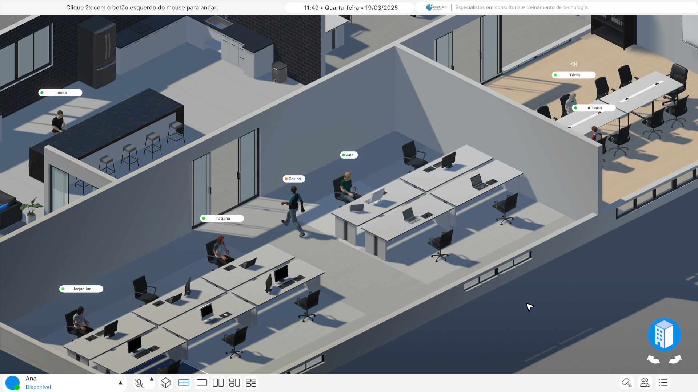
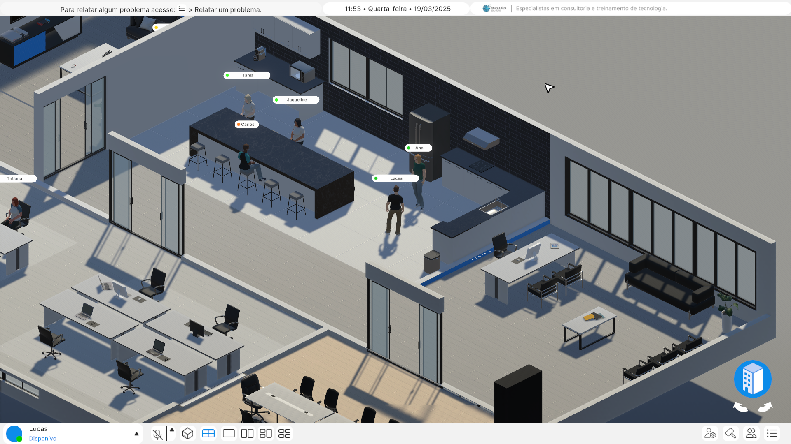
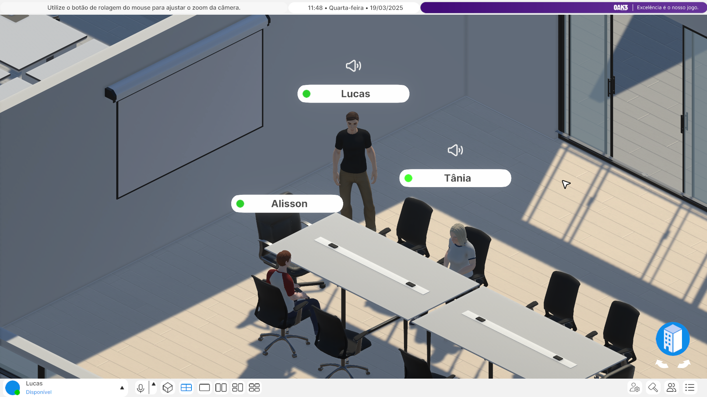
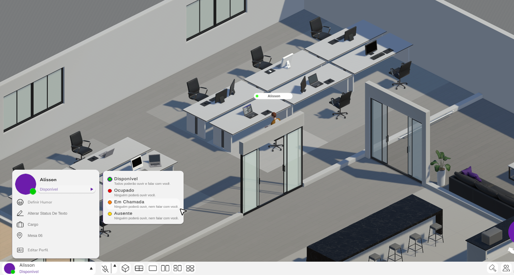

Technical Game Designer
Released: 2025
Studio: Oak3 Game Studio / Evoluto Solutions
Platforms: Windows and MacOS
Skill Focus: Game Design, Leadership, Production Management
Time on Project: ~ 18 months
Team size: 10 people
Engine: Unity
Link: https://muster.place/
Muster is a gamified remote work platform designed to improve collaboration, presence, and team engagement through a shared 3D virtual office, customizable avatars, and productivity metrics.
Muster was conceived during a moment of uncertainty in the tech industry regarding remote work.
While many companies were fully embracing distributed teams, highlighting increased productivity and healthier work-life balance, there were also growing reports of isolation, disconnection, and weakened team relationships.
At the same time, Oak3 was at a mature stage, with a well-structured team and strong technical foundations. We had recently worked on a third-person multiplayer product, gaining valuable experience with shared virtual spaces, presence, and real-time interaction.
With this context in mind, I brought forward the vision for Muster to my partners. I believed it was the right moment to explore a product that could address the social and collaborative gaps of remote work through a gamified, spatial experience.
I presented the core principles of the product and proposed approaching it as a long-term initiative, supported by an investor who could contribute not only financially, but also strategically.
The idea resonated with the team, and we decided to move forward. By building on the technical background and knowledge gained from previous projects, and by securing a strategic partner, we were able to reduce risk while exploring a new product-driven direction.


On Muster, I worked as Lead Game Designer, Product Owner, and closely collaborated as Producer throughout the project.
This was the first project where I formally acted as a design lead. Instead of working alongside another game designer as peers, I was responsible for supervising the design process, reviewing work, identifying improvements, and guiding design decisions.
Most of the core ideas and solutions originated from my vision, which I then directed another game designer to explore and detail. From there, I reviewed, refined, and challenged those designs to ensure consistency and quality.
In parallel, I was responsible for planning the product from start to finish. This included defining milestones, presenting the roadmap to the investor, and producing regular progress reports.
Whenever the project required a shift in direction or scope, I reassessed the plan, justified the changes, and realigned expectations.
During day-to-day development, I shared production responsibilities with the studio’s producer. Even when I was not acting directly in that role, I remained deeply involved in discussions around prioritization, scope, and decision-making to keep the project aligned with its goals.
Although Muster is not a traditional game, the systems were designed using the same principles applied to live game ecosystems: player behavior analysis, progression feedback, and long-term engagement signals.
Presence & Spatial Awareness System
Muster was designed to communicate presence through spatial continuity and visibility rather than abstract indicators.
Users always spawn at the office entrance, reinforcing the feeling of arriving at work and naturally exposing them to other occupied spaces and colleagues. From there, they can either move automatically to their desk or navigate the environment manually, reinforcing ownership of space.
The office layout supports full spatial awareness through camera rotation for global visibility, dynamic wall lowering inspired by The Sims to allow visibility between adjacent spaces without breaking spatial logic, and clear level design language where furniture layout and room composition communicate the purpose of each space.
In parallel, a supporting UI mirrors the world state by displaying online users and their status, the current space the user occupies, and which colleagues are present in each area.
As users move through the environment, both the world and UI update together, ensuring consistent spatial legibility and reinforcing a shared sense of presence.
Social Signaling & Implicit Rules System
Social interaction in Muster is guided by visual signals and implicit rules, reducing the need for explicit prompts or instructions.
Through the UI, users can view colleagues, access their profiles, and perform lightweight social actions such as waving to attract attention. When a wave is triggered, it produces a visible icon in the world for nearby users and a sound alert for the recipient.
Availability states act as implicit behavioral rules. If a user sets their status to busy, certain social actions, such as waving, become unavailable, subtly communicating boundaries without confrontation.
Additional signals reinforce social awareness through colored status indicators, editable text statuses, and audio icons displayed next to users who are currently speaking, even across different spaces.
Together, these signals create a readable social layer that communicates availability, interaction, and engagement without requiring direct communication.
Interaction & Movement System
Interaction in Muster is grounded in direct spatial action.
Users navigate the office through mouse-based movement, clicking on locations, avatars, or interactive objects. Interactive elements are visually highlighted through outlines, clearly signaling affordances.
Movement and interaction are reinforced through contextual interaction wheels when selecting avatars or objects, keyboard shortcuts supporting frequent actions, and zoom controls allowing users to adjust their spatial focus.
The office is divided into distinct zones, each supporting localized interaction and audio behavior. Audio follows a proximity-based system where users only hear others within the same zone, volume increases as avatars move closer together, and individual desks create private audio bubbles that preserve personal focus.
When entering a space, visual feedback reinforces context by dimming other areas and updating the UI with the current location and active participants.
Behavioral Aggregation & Feedback Loops
Muster translates moment-to-moment behavior into high-level signals about team dynamics, without focusing on individual productivity or surveillance.
Users can optionally report their mood when entering the office. Over time, these inputs allow patterns to emerge, helping leaders understand emotional trends across weeks rather than isolated moments.
Additionally, the system aggregates time spent in different spaces, co-presence with other users, and interaction frequency across the environment.
These patterns help surface signals such as social isolation or uneven collaboration, enabling earlier and more informed human conversations. The system is designed to support awareness and context, not control, ensuring feedback loops remain ethical and human-centered.


Designing Muster’s shared space focused on how spatial layout and visual cues could communicate social context instantly, without relying on explicit UI prompts, social mechanics, or system-driven feedback.
The office uses a consistent 3D perspective to ensure spatial legibility at all times, allowing users to immediately understand where others are and what is happening around them.
Each user has a clearly defined desk, reinforcing ownership of space and establishing a familiar mental model rooted in real-world offices.
Interactions are communicated through lightweight visual cues such as avatars grouping together, conversation indicators, and subtle animations that act as implicit rules.
These signals teach users how to behave in the space without tutorials, making presence, focus, and availability readable at a glance.
Additional layers, such as personal status indicators and optional private areas, give users control over their level of social exposure.
Whether someone is focused, in a call, or open to interaction, the environment communicates that state visually, reducing friction and social anxiety.
The broader layout supports multiple social contexts.
Meeting rooms, shared areas like a kitchen, and informal spaces encourage movement and recreate familiar office dynamics such as hallway conversations or casual encounters during breaks.
Even automated behaviors, like moving an avatar to a specific area when away, were designed to mirror real-world actions.
By building on interaction patterns people already understand from physical offices, Muster avoids introducing new social rules.
The result is a shared space that feels intuitive, readable, and human, supporting collaboration without demanding attention.

While the shared space communicates social context moment-to-moment, the underlying systems were designed to interpret behavior over time, transforming interaction patterns into meaningful, non-intrusive signals.
Rather than focusing on individual productivity, Muster was intentionally designed to interpret interaction patterns and spatial behavior at a high level, translating everyday actions into readable signals about team dynamics.
Behind the scenes, the platform aggregates information such as presence, movement, interaction frequency, and shared space usage to surface trends over time.
The goal is not to monitor individuals, but to provide teams and leaders with contextual awareness, supporting earlier and more human conversations when collaboration patterns begin to shift.
Optional self-reported mood indicators add an additional layer of context without enforcing participation.
Another guiding principle was reducing cognitive overload.
Remote work often fragments attention across multiple tools, breaking flow and increasing friction. Muster was designed as a central spatial workspace where essential tools and social context coexist, minimizing context switching and keeping focus on collaboration rather than navigation.
Finally, performance and lightness were treated as core design constraints.
The platform needed to feel present without becoming heavy or intrusive. Every system decision was guided by the idea that Muster should support daily work quietly in the background, enhancing awareness and connection without competing for attention.
Muster was the largest and most ambitious product I have worked on so far. Developed over more than a year, it involved close collaboration with the entire studio and required aligning game design thinking with broader, corporate-scale systems.
Designing a product that borrows from game design principles while remaining accessible to a non-gamer audience was one of the project’s main challenges.
Finding the balance between expressiveness, usability, and simplicity demanded constant iteration and careful decision-making.
Because it was a long and complex project, maintaining team motivation and engagement was also a significant responsibility.
Beyond technical challenges, this required clear direction, realistic planning, and continuous communication to keep everyone aligned with the product’s goals.
Throughout Muster’s development, I stepped fully into the role of Lead Game Designer, guiding design decisions, supporting the team, and ensuring coherence between vision and execution.
Although this role was new to me, it became one of the most valuable learning experiences of my career.
The project successfully reached its planned milestone, delivering a functional MVP now in the hands of the investor.
More importantly, Muster reinforced my ability to lead design at scale, navigate ambiguity, and build complex systems that prioritize human interaction and clarity.